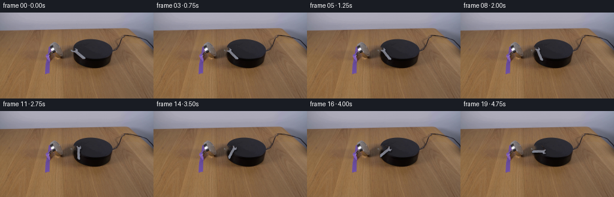
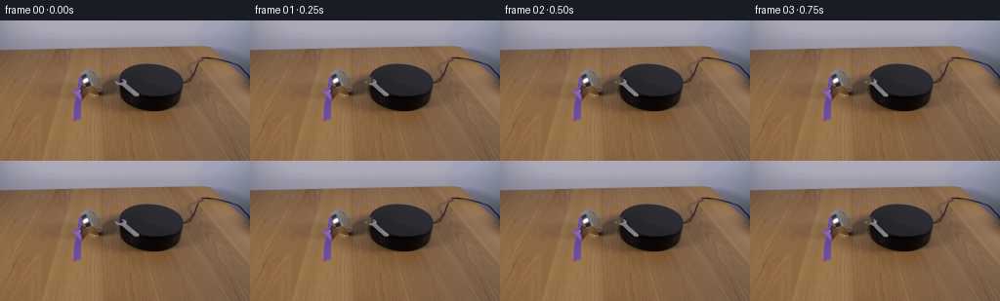

CODING AGENTS AS PIXEL WORLD MODELS
traex/DeepSeek-V4.1-Flash · 0101
点击播放 · 原生 RGB 像素
逐轮保存的候选
回放视频、检查图与代码变化。
每份候选均可单独播放。实际图片检查记录在下方工具轨迹中。
候选 01播放与检查图
点击播放 · 原生 RGB 像素


展开代码变化
--- 上一保存版本
+++ 本次保存版本
@@ -0,0 +1,172 @@
+from pathlib import Path
+
+import cv2
+import numpy as np
+from PIL import Image
+
+import artifact_io
+
+
+CASE_DIR = Path(__file__).resolve().parent
+WIDTH, HEIGHT = 256, 144
+FRAME_COUNT = 20
+
+
+def connected_component(mask, seed):
+ """Keep the foreground component that contains a known wrench pixel."""
+ count, labels, stats, _ = cv2.connectedComponentsWithStats(mask.astype(np.uint8), 8)
+ sx, sy = seed
+ label = int(labels[sy, sx])
+ if label == 0:
+ areas = stats[1:, cv2.CC_STAT_AREA]
+ label = int(np.argmax(areas)) + 1
+ return (labels == label).astype(np.uint8)
+
+
+def extract_wrench(frame):
+ # The wrench is the neutral, bright diagonal object on the dark platform.
+ x0, y0, x1, y1 = 118, 56, 148, 82
+ patch = frame[y0:y1, x0:x1]
+ rgb = patch.astype(np.int16)
+ value = rgb.max(axis=2)
+ spread = rgb.max(axis=2) - rgb.min(axis=2)
+
+ candidate = ((value >= 52) & (spread <= 34)).astype(np.uint8)
+ candidate[:3] = 0
+ candidate[:, :4] = 0
+ candidate = connected_component(candidate, (132 - x0, 69 - y0))
+ candidate = cv2.morphologyEx(
+ candidate, cv2.MORPH_CLOSE, cv2.getStructuringElement(cv2.MORPH_ELLIPSE, (3, 3))
+ )
+
+ ys, xs = np.where(candidate)
+ bx0, bx1 = int(xs.min()), int(xs.max()) + 1
+ by0, by1 = int(ys.min()), int(ys.max()) + 1
+ pad = 3
+ bx0 = max(0, bx0 - pad)
+ by0 = max(0, by0 - pad)
+ bx1 = min(candidate.shape[1], bx1 + pad)
+ by1 = min(candidate.shape[0], by1 + pad)
+
+ alpha = cv2.GaussianBlur(candidate.astype(np.float32), (0, 0), 0.55)
+ alpha = np.clip((alpha - 0.08) / 0.84, 0.0, 1.0)
+ alpha *= candidate.astype(np.float32) * 0.90 + cv2.GaussianBlur(
+ candidate.astype(np.float32), (0, 0), 1.15
+ ) * 0.10
+ alpha = np.clip(alpha, 0.0, 1.0)
+
+ sprite_rgb = patch[by0:by1, bx0:bx1].copy()
+ sprite_alpha = alpha[by0:by1, bx0:bx1]
+ pivot = np.array([132.0 - (x0 + bx0), 68.8 - (y0 + by0)], dtype=np.float32)
+ return sprite_rgb, sprite_alpha, pivot
+
+
+def make_clean_plate(frame, sprite_alpha, sprite_size):
+ mask = np.zeros((HEIGHT, WIDTH), dtype=np.uint8)
+ sprite_rgb, alpha, pivot = sprite_size
+ h, w = alpha.shape
+ cx = int(round(118 + pivot[0]))
+ cy = int(round(56 + pivot[1]))
+ left = cx - int(round(pivot[0]))
+ top = cy - int(round(pivot[1]))
+ mask[top : top + h, left : left + w] = (alpha > 0.04).astype(np.uint8) * 255
+ mask = cv2.dilate(mask, cv2.getStructuringElement(cv2.MORPH_ELLIPSE, (5, 5)), iterations=1)
+ return cv2.inpaint(frame, mask, 4, cv2.INPAINT_TELEA)
+
+
+def rotate_sprite(rgb, alpha, angle, scale=6):
+ h, w = alpha.shape
+ pad = 5
+ padded_rgb = cv2.copyMakeBorder(
+ rgb, pad, pad, pad, pad, cv2.BORDER_REPLICATE
+ )
+ padded_alpha = cv2.copyMakeBorder(
+ alpha, pad, pad, pad, pad, cv2.BORDER_CONSTANT, value=0.0
+ )
+
+ ph, pw = padded_alpha.shape
+ big_size = (pw * scale, ph * scale)
+ rgb_big = cv2.resize(padded_rgb, big_size, interpolation=cv2.INTER_CUBIC)
+ alpha_big = cv2.resize(padded_alpha, big_size, interpolation=cv2.INTER_CUBIC)
+ alpha_big = np.clip(alpha_big, 0.0, 1.0)
+ premultiplied = rgb_big.astype(np.float32) * alpha_big[:, :, None]
+
+ center = ((pw - 1) * scale / 2.0, (ph - 1) * scale / 2.0)
+ matrix = cv2.getRotationMatrix2D(center, -angle, 1.0)
+ rotated_rgb = cv2.warpAffine(
+ premultiplied,
+ matrix,
+ big_size,
+ flags=cv2.INTER_CUBIC,
+ borderMode=cv2.BORDER_CONSTANT,
+ borderValue=(0.0, 0.0, 0.0),
+ )
+ rotated_alpha = cv2.warpAffine(
+ alpha_big,
+ matrix,
+ big_size,
+ flags=cv2.INTER_CUBIC,
+ borderMode=cv2.BORDER_CONSTANT,
+ borderValue=0.0,
+ )
+ rotated_alpha = np.clip(rotated_alpha, 0.0, 1.0)
+ rotated_rgb /= np.maximum(rotated_alpha[:, :, None], 1e-5)
+
+ small_size = (pw, ph)
+ rgb_out = cv2.resize(rotated_rgb, small_size, interpolation=cv2.INTER_AREA)
+ alpha_out = cv2.resize(rotated_alpha, small_size, interpolation=cv2.INTER_AREA)
+ return np.clip(rgb_out, 0, 255).astype(np.uint8), np.clip(alpha_out, 0.0, 1.0)
+
+
+def composite_wrench(background, rgb, alpha, pivot, offset, shadow_angle):
+ out = background.astype(np.float32)
+ h, w = alpha.shape
+ px = int(round(pivot[0] + offset[0]))
+ py = int(round(pivot[1] + offset[1]))
+ left = px - w // 2
+ top = py - h // 2
+ right, bottom = left + w, top + h
+
+ if left < 0 or top < 0 or right > WIDTH or bottom > HEIGHT:
+ return background
+
+ dst = out[top:bottom, left:right]
+
+ # Soft contact shadow, shifted slightly down-right and rotated with the tool.
+ shadow = cv2.GaussianBlur(alpha, (0, 0), 1.2)
+ shadow = np.roll(shadow, 2, axis=0)
+ shadow = np.roll(shadow, 1, axis=1)
+ shadow_strength = 0.42 * shadow[:, :, None]
+ dst *= 1.0 - shadow_strength
+
+ a = alpha[:, :, None]
+ dst[:] = rgb.astype(np.float32) * a + dst * (1.0 - a)
+ out[top:bottom, left:right] = dst
+ return np.clip(out, 0, 255).astype(np.uint8)
+
+
+def main():
+ first = np.asarray(Image.open(CASE_DIR / "first_frame.png").convert("RGB"), dtype=np.uint8)
+ if first.shape != (HEIGHT, WIDTH, 3):
+ raise ValueError(f"Unexpected first frame shape: {first.shape}")
+
+ sprite_rgb, sprite_alpha, pivot = extract_wrench(first)
+ clean = make_clean_plate(first, sprite_alpha, (sprite_rgb, sprite_alpha, pivot))
+ pivot_abs = np.array([132.0, 68.8], dtype=np.float32)
+
+ frames = np.empty((FRAME_COUNT, HEIGHT, WIDTH, 3), dtype=np.uint8)
+ frames[0] = first
+
+ for index in range(1, FRAME_COUNT):
+ u = index / (FRAME_COUNT - 1)
+ angle = 12.0 * u + 128.0 * u * u
+ rotated_rgb, rotated_alpha = rotate_sprite(sprite_rgb, sprite_alpha, angle)
+ frames[index] = composite_wrench(
+ clean, rotated_rgb, rotated_alpha, pivot_abs, (0.0, 0.0), angle
+ )
+
+ artifact_io.save(frames, CASE_DIR)
+
+
+if __name__ == "__main__":
+ main()
可观测工具轨迹
实际执行的命令与返回图片。
命令 1exit 0
/bin/bash -c "pwd && rg --files -g '"'!*.mp4'"' -g '"'!*.mov'"' | sort | sed -n '1,200p'"
命令 2exit 0
/bin/bash -c "sed -n '1,240p' prompt.txt"
命令 3exit 0
/bin/bash -c "sed -n '1,280p' GENERATION_RULES.md"
命令 4exit 0
/bin/bash -c 'ls -la && file first_frame.png 2>/dev/null && identify first_frame.png 2>/dev/null || true'
命令 5exit 0
/bin/bash -c "sed -n '1,260p' artifact_io.py"
命令 6exit 0
/bin/bash -c "sed -n '1,260p' player_template.html"
命令 7exit 0
/bin/bash -c "python - <<'PY'
from PIL import Image
import numpy as np
im=Image.open('first_frame.png')
print(im.mode, im.size)
a=np.asarray(im)
print(a.shape,a.dtype,a.min(),a.max(),a.mean(axis=(0,1)))
# most common colors exact
u,c=np.unique(a.reshape(-1,3),axis=0,return_counts=True)
for i in np.argsort(c)[-20:][::-1]: print(tuple(u[i]),c[i])
PY"命令 8exit 0
/bin/bash -c "python - <<'PY'
from PIL import Image
import numpy as np
im=np.asarray(Image.open('first_frame.png')).astype(float)
# quantize nearest 8 and print compact map at 64x36 with luminance/hue codes
h,w,_=im.shape
for y0 in range(0,h,4):
line=''
for x0 in range(0,w,4):
p=im[y0:y0+4,x0:x0+4].mean((0,1))
r,g,b=p
mx=max(p); mn=min(p); sat=(mx-mn)/(mx+1e-6)
if mx<35: c='@'
elif mx<60: c='#'
elif mx<95: c='O'
elif b>r*1.15 and b>g*1.08: c='B'
elif r>g*1.15 and g>b*1.05: c='W'
elif mx>200: c='.'
elif mx>160: c=':'
elif mx>120: c='+'
else: c='-'
line+=c
print(f'{y0:3d} '+line)
PY"命令 9exit 0
/bin/bash -c "python - <<'PY'
from PIL import Image
import numpy as np
from sklearn.cluster import KMeans
im=np.asarray(Image.open('first_frame.png')).astype(float)
y,x=np.mgrid[:144,:256]
X=im.reshape(-1,3)
for k in [8,12,16,24]:
km=KMeans(k, random_state=1,n_init=10).fit(X)
lab=km.labels_.reshape(144,256)
print('\\nK',k)
for i,c in enumerate(km.cluster_centers_):
m=lab==i; yy,xx=np.where(m)
print(i,tuple(c.round().astype(int)),m.sum(),(xx.min(),yy.min(),xx.max(),yy.max()) if m.any() else '')
PY"命令 10exit 0
/bin/bash -c "python - <<'PY'
from PIL import Image
im=Image.open('first_frame.png')
# enlarged crops for pixel inspection
for name,box in [('scene',(0,0,256,144)),('left',(0,30,130,105)),('center',(70,25,200,105)),('right',(160,20,256,110))]:
im.crop(box).resize(((box[2]-box[0])*4,(box[3]-box[1])*4),Image.Resampling.NEAREST).save('.tmp/'+name+'.png')
PY"命令 11exit 0
/bin/bash -c "python - <<'PY'
from PIL import Image
import numpy as np
from sklearn.cluster import KMeans
im=np.asarray(Image.open('first_frame.png')).astype(float)
# kmeans 20 restricted to x 55:200 y 25:110
roi=im[25:110,55:200]
X=roi.reshape(-1,3)
km=KMeans(20,random_state=3,n_init=10).fit(X)
lab=km.labels_.reshape(roi.shape[:2])
# sort clusters by count, map to chars
counts=np.bincount(lab.ravel())
order=np.argsort(counts)[::-1]
chars='ABCDEFGHIJKLMNOPQRST'
mp={c:chars[i] for i,c in enumerate(order)}
print('LEGEND')
for i,c in enumerate(order):
m=lab==c; yy,xx=np.where(m)
print(chars[i],tuple(km.cluster_centers_[c].round().astype(int)),counts[c],(xx.min()+55,yy.min()+25,xx.max()+55,yy.max()+25))
print('\\nMAP x=55..199 step2, y=25..109 step2')
for yy in range(0,85,2):
print(f'{yy+25:3d} '+''.join(mp[lab[yy,xx]] for xx in range(0,145,2)))
PY"命令 12exit 0
/bin/bash -c "python - <<'PY'
from PIL import Image
import numpy as np
im=np.asarray(Image.open('first_frame.png'))
# Print ascii edge map around object: gradient magnitude and color categories
from scipy.ndimage import gaussian_filter, sobel
a=im.astype(float)
g=gaussian_filter(a,(1,1,0))
gray=g.mean(2)
gx=sobel(gray,axis=1); gy=sobel(gray,axis=0); mag=np.hypot(gx,gy)
for y in range(35,100,1):
line=''
for x in range(70,195,1):
p=im[y,x]; r,gg,b=map(int,p)
if r>210 and gg>210: ch='*'
elif mag[y,x]>100: ch='#'
elif max(p)-min(p)<10 and max(p)>80: ch='M'
elif max(p)<30: ch='X'
elif max(p)<60: ch='@'
elif b>r*1.2 and b>gg*1.1: ch='P'
elif r>gg*1.25 and gg>b*1.15: ch='W'
elif r>gg*1.12: ch='w'
elif max(p)>175: ch='.'
elif max(p)>130: ch=':'
elif max(p)>90: ch='+'
else: ch='-'
line+=ch
print(f'{y:3d} {line}')
PY"命令 13exit 0
/bin/bash -c "python - <<'PY'
from PIL import Image
import numpy as np
im=np.asarray(Image.open('first_frame.png'))
# print average RGB grid for key areas
pts=[(100,50),(120,50),(150,50),(180,50),(210,50),(230,50),
(100,55),(110,55),(120,55),(130,55),(140,55),(150,55),(160,55),(170,55),(180,55),(190,55),
(100,60),(110,60),(120,60),(130,60),(140,60),(150,60),(160,60),(170,60),(180,60),(190,60),
(100,70),(110,70),(120,70),(130,70),(140,70),(150,70),(160,70),(170,70),(180,70),(190,70),
(100,80),(110,80),(120,80),(130,80),(140,80),(150,80),(160,80),(170,80),(180,80),(190,80)]
for y in range(45,95,5):
print('y',y, [(x,tuple(im[y,x])) for x in range(80,210,10)])
PY"命令 14exit 0
/bin/bash -c "python - <<'PY'
from PIL import Image
import numpy as np
im=np.asarray(Image.open('first_frame.png'))
# sample likely wrench region exact 1-pixel map, classify based on table background distance using local expected colors
# print grayscale color codes for x 80-200, y 45-100 every pixel at 1x chars, reducing palette into RGB bins
for y in range(42,96):
line=''
for x in range(80,201):
r,g,b=im[y,x]
if max(r,g,b)<70: ch='@'
elif max(r,g,b)<100: ch='X'
elif r>120 and g>90 and b<100: ch='.'
elif abs(int(r)-int(g))<12 and abs(int(g)-int(b))<20 and r>100: ch='M'
elif r>g and g>b: ch=':'
elif b>r: ch='P'
else: ch='-'
line+=ch
print(f'{y:3d} {line}')
PY"命令 15exit 0
/bin/bash -c "python - <<'PY'
from PIL import Image
import numpy as np
im=np.asarray(Image.open('first_frame.png')).astype(int)
def cat(p):
r,g,b=p; mx=p.max(); mn=p.min()
if mx<65: return 'K' # dark
if mx<100: return 'k'
if abs(r-g)<10 and abs(g-b)<22 and mx>100: return 'G' # neutral gray
if b>r+10: return 'P' # purple/blue
if r>g+20 and g>b+10: return 'T' # tan/brown
return 'O'
for y in [25,30,35,40,43,44,45,46,47,48,49,50,52,54,56,58,60,62,64,66,68,70,72,74,76,78,80,82,84,86,88,90,92,94,96,100]:
row=''.join(cat(im[y,x]) for x in range(256))
# RLE
out=[]; s=0; c=row[0]
for i,ch in enumerate(row[1:],1):
if ch"'!=c:
if i-s>=2: out.append(f'"'{s}-{i-1}{c}')
s=i;c=ch
if 256-s>=2: out.append(f'{s}-255{c}')
print(f'{y:3d}', ' '.join(out))
PY"命令 16exit 0
/bin/bash -c "python - <<'PY'
from PIL import Image
import numpy as np
from scipy.ndimage import binary_erosion
im=np.asarray(Image.open('first_frame.png'))
# define dark platform interior via dark pixels, identify connected comp
mask=(im.max(2)<75)
# restrict x>110
mask[:,:110]=False
from scipy.ndimage import label
lab,n=label(mask)
counts=np.bincount(lab.ravel()); counts[0]=0
for i in np.argsort(counts)[::-1][:10]:
yy,xx=np.where(lab==i)
print(i,counts[i],(xx.min(),yy.min(),xx.max(),yy.max()))
# pixels significantly differing from local median outside object? print magnified object crop as terminal 2x? no.
PY"命令 17exit 0
/bin/bash -c "python - <<'PY'
from PIL import Image
import numpy as np
im=np.asarray(Image.open('first_frame.png'))
# palette-quantized exact crop dump as tiny colored ppm? save high contrast versions via numeric operations
# identify pixels belonging to wrench likely based on saturation/brightness difference to platform
crop=im[42:96,75:201].copy()
# save color HSV saturation/brightness maps
from PIL import Image
import colorsys
hsv=np.zeros_like(crop,dtype=float)
for y in range(crop.shape[0]):
for x in range(crop.shape[1]):
r,g,b=crop[y,x]/255
hsv[y,x]=colorsys.rgb_to_hsv(r,g,b)
for k,arr in [('hue',hsv[:,:,0]),('sat',hsv[:,:,1]),('val',hsv[:,:,2])]:
a=(arr*255).clip(0,255).astype(np.uint8)
Image.fromarray(a).resize((crop.shape[1]*5,crop.shape[0]*5),Image.Resampling.NEAREST).save('.tmp/'+k+'.png')
PY"命令 18exit 0
/bin/bash -c "python - <<'PY'
from PIL import Image
import numpy as np
im=np.asarray(Image.open('first_frame.png'))
# color classification: print only pixels in plausible wrench mask based on gray / brightness outside platform
# Platform exact dark region. Wrench has medium gray pixels and tan/brown shadows.
for y in range(44,94):
line=''
for x in range(76,190):
r,g,b=map(int,im[y,x])
if max(r,g,b)<70: ch=' '
elif max(r,g,b)<95: ch='.'
elif abs(r-g)<14 and abs(g-b)<24: ch='#'
elif r>g*1.15 and g>b*1.12: ch='w'
else: ch='+'
line+=ch
print(f'{y:2d} {line}')
PY"命令 19exit 0
/bin/bash -c "python - <<'PY'
from PIL import Image
import numpy as np
im=np.asarray(Image.open('first_frame.png')).astype(int)
# luminance map of platform interior; chars by brightness only
chars=' .:-=+*#%@'
for y in range(42,98):
line=''
for x in range(115,200):
r,g,b=im[y,x]; lum=(.2126*r+.7152*g+.0722*b)
if x<122 or x>192 or y<43: ch=' '
else:
# scale 0..90 to chars, then lighter distinct
i=int(np.clip(lum/95*(len(chars)-1),0,len(chars)-1)); ch=chars[i]
line+=ch
print(f'{y:3d} {line}')
PY"命令 20exit 0
/bin/bash -c "python - <<'PY'
from PIL import Image
import numpy as np
im=np.asarray(Image.open('first_frame.png')).astype(int)
chars=' .:-=+*#%@'
# print x 80-145 y45-95 with bright objects mapped separately
for y in range(44,96):
line=''
for x in range(78,146):
r,g,b=im[y,x]; lum=.2126*r+.7152*g+.0722*b
if max(r,g,b)<75: ch=' '
elif max(r,g,b)<100: ch='.'
elif abs(r-g)<12 and abs(g-b)<20: ch='#'
elif r>g and g>b: ch='w'
else: ch='+'
line+=ch
print(f'{y:3d} {line}')
PY"命令 21exit 0
/bin/bash -c "python - <<'PY'
from PIL import Image
import numpy as np
im=np.asarray(Image.open('first_frame.png'))
# sample center of platform: color vs y
for y in [45,50,55,60,65,70,75,80,85,90]:
print(y, [tuple(im[y,x]) for x in [125,135,145,155,165,175,185,190]])
# detect dominant colors within object
roi=im[45:94,122:199]
u,c=np.unique(roi.reshape(-1,3),axis=0,return_counts=True)
print('colors')
for i in np.argsort(c)[-50:][::-1]: print(tuple(u[i]),c[i])
PY"命令 22exit 0
/bin/bash -c "python - <<'PY'
from PIL import Image
import numpy as np
im=np.asarray(Image.open('first_frame.png')).astype(int)
# map x 74..130 y 45..84 using luminance chars and categories
for y in range(44,86):
line=''
for x in range(72,132):
r,g,b=im[y,x]; mx=max(r,g,b)
if mx<50: ch='@'
elif mx<80: ch='X'
elif mx<110: ch='x'
elif mx<140: ch='O'
elif mx<170: ch='o'
elif mx<200: ch='+'
else: ch='*'
line+=ch
print(f'{y:3d} {line}')
PY"命令 23exit 0
/bin/bash -c "python - <<'PY'
from PIL import Image
import numpy as np
im=np.asarray(Image.open('first_frame.png'))
# Save edges using numeric ops for own analysis
from scipy.ndimage import gaussian_filter, sobel
a=im.astype(float)
g=gaussian_filter(a,(0.7,0.7,0))
mag=np.hypot(sobel(g[:,:,0],1),sobel(g[:,:,0],0))+np.hypot(sobel(g[:,:,1],1),sobel(g[:,:,1],0))+np.hypot(sobel(g[:,:,2],1),sobel(g[:,:,2],0))
edge=(np.clip(mag/4,0,255)).astype(np.uint8)
Image.fromarray(edge).save('.tmp/edges.png')
Image.fromarray(edge[38:102,70:205]).resize((135*5,64*5),Image.Resampling.NEAREST).save('.tmp/edges_crop.png')
PY"命令 24exit 0
/bin/bash -c "python - <<'PY'
from PIL import Image
import numpy as np
im=np.asarray(Image.open('first_frame.png'))
# grayscale edge-ish ascii
from scipy.ndimage import sobel, gaussian_filter
a=im.astype(float)
g=gaussian_filter(a,(.8,.8,0))
mag=sum(np.hypot(sobel(g[:,:,c],1),sobel(g[:,:,c],0)) for c in range(3))
for y in range(42,98):
line=''
for x in range(110,205):
v=mag[y,x]
ch=' ' if v<80 else '.' if v<160 else ':' if v<260 else '*' if v<400 else '#' if v<600 else '@'
line+=ch
print(f'{y:3d} {line}')
PY"命令 25exit 0
/bin/bash -c "python - <<'PY'
from PIL import Image
import numpy as np
im=np.asarray(Image.open('first_frame.png'))
# find pixels significantly brighter than expected platform base: platform roughly constant RGB by x,y except object
# save several threshold masks numerically
r,g,b=im[:,:,0].astype(int),im[:,:,1].astype(int),im[:,:,2].astype(int)
bright=(r+g+b)>250
# within platform, excludes table
m=bright & (np.indices(r.shape)[0]>=45)&(np.indices(r.shape)[0]<=93)&(np.indices(r.shape)[1]>=120)&(np.indices(r.shape)[1]<=190)
# output ascii only mask
for y in range(44,95):
print(f'{y:3d} '+''.join('#' if m[y,x] else ' ' for x in range(118,194)))
PY"命令 26exit 0
/bin/bash -c "python - <<'PY'
from PIL import Image
import numpy as np
im=np.asarray(Image.open('first_frame.png'))
# Print full RGB at select object pixels
for y in range(50,82,2):
print('Y',y)
for x in range(85,130,5):
print(x,tuple(im[y,x]),end=' ')
print()
PY"命令 27exit 0
/bin/bash -c "python - <<'PY'
from PIL import Image
import numpy as np
im=np.asarray(Image.open('first_frame.png')).astype(int)
# print exact object by colorful map: hue categories using HSV and bright values
import colorsys
for y in range(48,82):
line=''
for x in range(80,132):
r,g,b=im[y,x]/255
h,s,v=colorsys.rgb_to_hsv(r,g,b)
if v<.2: ch='@'
elif s<.1: ch='#'
elif s<.22: ch='+'
elif h<.08: ch='w'
elif h<.14: ch='o'
else: ch='.'
line+=ch
print(f'{y:3d} {line}')
PY"命令 28exit 0
/bin/bash -c "python - <<'PY'
from PIL import Image
import numpy as np
im=np.asarray(Image.open('first_frame.png'))
# show edge map of left object by print thresholded pixels as colors? print object pixels with RGB hex and positions grouped by high neutral/white
for y in range(48,84):
seg=[]
for x in range(80,132):
r,g,b=map(int,im[y,x])
if abs(r-g)<15 and abs(g-b)<25 and max(r,g,b)>100:
seg.append(x)
if seg:
# runs
runs=[]; s=seg[0]; prev=s
for x in seg[1:]:
if x>prev+1: runs.append((s,prev)); s=x
prev=x
runs.append((s,prev))
print(y,runs)
PY"命令 29exit 0
/bin/bash -c "python - <<'PY'
from PIL import Image
import numpy as np
im=np.asarray(Image.open('first_frame.png'))
# Find exact bright neutral pixels in left object and output threshold mask grayscale on x 80-110 y48-80
for y in range(46,82):
line=''
for x in range(78,112):
r,g,b=im[y,x]
neutral=abs(int(r)-int(g))<15 and abs(int(g)-int(b))<25
val=max(r,g,b)
if neutral and val>175: ch='@'
elif neutral and val>140: ch='#'
elif neutral and val>105: ch='+'
elif val>100: ch='o'
elif val>70: ch='.'
else: ch=' '
line+=ch
print(f'{y:3d} {line}')
PY"命令 30exit 0
/bin/bash -c "python - <<'PY'
import cv2, numpy as np
im=cv2.imread('first_frame.png')
g=cv2.cvtColor(im,cv2.COLOR_BGR2GRAY)
roi=g[45:100,75:130]
# CLAHE then canny
roi=cv2.resize(roi,None,fx=4,fy=4,interpolation=cv2.INTER_CUBIC)
e=cv2.Canny(roi,30,80)
lines=cv2.HoughLinesP(e,1,np.pi/180,threshold=25,minLineLength=25,maxLineGap=5)
print('lines')
if lines is not None:
for l in sorted(lines[:,0].tolist(),key=lambda q:-((q[2]-q[0])**2+(q[3]-q[1])**2))[:40]:
x1,y1,x2,y2=l
print(tuple(round(v/4+(75 if i%2==0 else 45),1) for i,v in enumerate(l)))
PY"命令 31exit 0
/bin/bash -c "python - <<'PY'
from PIL import Image
import numpy as np
im=np.asarray(Image.open('first_frame.png')).astype(int)
# K-means on platform ROI to isolate object, print cluster labels spatially.
from sklearn.cluster import KMeans
roi=im[45:94,122:190]
km=KMeans(8,random_state=0,n_init=10).fit(roi.reshape(-1,3))
for i,c in enumerate(km.cluster_centers_): print(i,c.round().astype(int),np.sum(km.labels_==i))
chars='ABCDEFGH'
lab=km.labels_.reshape(roi.shape[:2])
for y in range(0,49,1):
print(f'{y+45:2d} '+''.join(chars[i] for i in lab[y]))
PY"命令 32exit 0
/bin/bash -c "python - <<'PY'
from PIL import Image
import numpy as np
im=np.asarray(Image.open('first_frame.png')).astype(int)
# show high contrast difference from robust local platform background for x122..198 y45..93
# estimate background by median per row of right edge? platform color varies x/y but known.
# print value >70 bright object mask, where object seems maybe wrench at x126..136.
for y in range(44,95):
line=''
for x in range(115,200):
r,g,b=im[y,x]; v=max(r,g,b)
# object pixels are neutral gray or near black edge, vs platform neutral dark purple; find brightness thresholds
if v>=150: ch='#'
elif v>=120: ch='+'
elif v>=95: ch='o'
elif v>=70: ch='.'
else: ch=' '
line+=ch
print(f'{y:3d} {line}')
PY"命令 33exit 0
/bin/bash -c "python - <<'PY'
from PIL import Image
import numpy as np
im=np.asarray(Image.open('first_frame.png'))
# map exact grayscale/platform colors to detect dark tool and bright magnet
# use RLE with values for rows 55..85 x 75..135
for y in range(52,84):
print('\\ny',y)
for x in range(76,136,4):
print(f'{x}:{tuple(im[y,x])}',end=' ')
PY"命令 34exit 0
/bin/bash -c "python - <<'PY'
from PIL import Image
import numpy as np
im=np.asarray(Image.open('first_frame.png'))
Y,X=np.mgrid[:144,:256]
r,g,b=[im[:,:,i].astype(int) for i in range(3)]
# platform approximate ellipse center 160,70 rx 39 ry 25; show brightness/color mask
m=((X-160)/40)**2+((Y-70)/26)**2<=1
for th in [70,85,100,115,130]:
print('\\nTH',th)
for y in range(43,97):
line=''
for x in range(116,201):
if not m[y,x]: ch=' '
elif max(r[y,x],g[y,x],b[y,x])>=th: ch='#'
else: ch='.'
line+=ch
print(f'{y:3d} {line}')
PY"命令 35exit 0
/bin/bash -c "python - <<'PY'
from PIL import Image
import numpy as np
im=np.asarray(Image.open('first_frame.png')).astype(int)
for y in range(48,90):
line=''
for x in range(118,155):
r,g,b=im[y,x]
neutral=(abs(r-g)<=15 and abs(g-b)<=24)
if neutral and max(r,g,b)>145: ch='@'
elif neutral and max(r,g,b)>105: ch='#'
elif neutral and max(r,g,b)>80: ch='+'
elif max(r,g,b)<50: ch=' '
elif max(r,g,b)<70: ch='.'
else: ch='o'
line+=ch
print(f'{y:3d} {line}')
PY"命令 36exit 0
/bin/bash -c "python - <<'PY'
from PIL import Image
import numpy as np
im=np.asarray(Image.open('first_frame.png')).astype(int)
# print exact RGB where object neutral/highlight in x85-105 y50-70
for y in range(49,69):
print(y, [(x,tuple(im[y,x])) for x in range(82,105) if (abs(im[y,x,0]-im[y,x,1])<15 and abs(im[y,x,1]-im[y,x,2])<25 and max(im[y,x])>100)])
PY"命令 37exit 0
/bin/bash -c "python - <<'PY'
from PIL import Image
import numpy as np
im=np.asarray(Image.open('first_frame.png')).astype(int)
# luminance map around left wrench only, values 80..160 using a stable custom palette
for y in range(48,80):
line=''
for x in range(82,125):
r,g,b=im[y,x]
neutral=(abs(r-g)<18 and abs(g-b)<28)
val=max(r,g,b)
if neutral and val>=230: ch='@'
elif neutral and val>=170: ch='#'
elif neutral and val>=130: ch='*'
elif neutral and val>=105: ch='+'
elif neutral and val>=85: ch=':'
elif val>=70: ch='.'
else: ch=' '
line+=ch
print(f'{y:3d} {line}')
PY"命令 38exit 0
/bin/bash -c "python - <<'PY'
from PIL import Image
import numpy as np
im=np.asarray(Image.open('first_frame.png')).astype(int)
# sample lines for background fit: right platform around x170-198 and bottom
for y in [45,50,55,60,65,70,75,80,85,90,92]:
print('y',y, [(x,tuple(im[y,x])) for x in [130,140,150,160,170,180,188]])
PY"命令 39exit 0
/bin/bash -c "python - <<'PY'
from PIL import Image
import numpy as np
im=np.asarray(Image.open('first_frame.png')).astype(int)
# sample x around magnet: black oval likely right object? print color by run for y 40..95 at 5 px
for x in [125,130,135,140,145,150,155,160,165,170,175,180,185,190,195]:
vals=[]
for y in range(43,95):
p=im[y,x]; s=f'{p[0]:02x}{p[1]:02x}{p[2]:02x}'
vals.append(s)
print(x,' '.join(vals))
PY"命令 40exit 0
/bin/bash -c "python - <<'PY'
from PIL import Image
import numpy as np
im=np.asarray(Image.open('first_frame.png')).astype(int)
# inspect exact layout by deriving background median using rows/columns and thresholding color distance
# Estimate platform mask from dark area, object left wrench seems x84..104 y50..68 and right maybe x122..136 y60..77.
# print luminance with platform mask crop
for y in range(44,94):
line=''
for x in range(116,205):
r,g,b=im[y,x]
# platform background generally max 40-60, edges gradient. Object mostly >80
v=max(r,g,b)
if v<70: ch=' '
elif v<90: ch='.'
elif v<110: ch=':'
elif v<130: ch='+'
elif v<160: ch='*'
elif v<210: ch='#'
else: ch='@'
line+=ch
print(f'{y:3d} {line}')
PY"命令 41exit 0
/bin/bash -c "python - <<'PY'
from PIL import Image
import numpy as np
im=np.asarray(Image.open('first_frame.png')).astype(int)
# table/background colors are tan, platform dark; identify local texture with kmeans.
# Print crop as ANSI truecolor? terminal output may show escape but no visual in tool.
# Dump row runs of values in platform to determine flat interior.
for y in range(45,94):
vals=im[y,122:200]
# summarize unique exact colors counts
u,c=np.unique(vals.reshape(-1,3),axis=0,return_counts=True)
top=np.argsort(c)[-5:][::-1]
print(y,[(tuple(u[i]),int(c[i])) for i in top])
PY"命令 42exit 0
/bin/bash -c "python - <<'PY'
from PIL import Image
import numpy as np
im=np.asarray(Image.open('first_frame.png')).astype(int)
# quantize region 76..140 45..95 by exact luminance and neutral to reveal shape in blocks 2x2
for y in range(46,92,2):
line=''
for x in range(76,140,2):
p=im[y:y+2,x:x+2].mean((0,1)); r,g,b=p; v=max(p); neutral=(abs(r-g)<18 and abs(g-b)<28)
if v<55: ch=' '
elif v<75: ch='.'
elif neutral and v>180: ch='@'
elif neutral and v>135: ch='#'
elif neutral and v>105: ch='*'
elif neutral and v>80: ch='+'
elif r>g+8 and g>b+8: ch='o'
else: ch=':'
line+=ch
print(f'{y:3d} {line}')
PY"命令 43exit 0
/bin/bash -c "python - <<'PY'
from PIL import Image
import numpy as np
im=np.asarray(Image.open('first_frame.png')).astype(int)
for y in range(52,90):
line=''
for x in range(118,160):
r,g,b=im[y,x]; v=max(r,g,b)
neutral=(abs(r-g)<20 and abs(g-b)<30)
if neutral and v>=200: ch='@'
elif neutral and v>=150: ch='#'
elif neutral and v>=110: ch='*'
elif neutral and v>=85: ch='+'
elif neutral and v>=65: ch=':'
elif v<50: ch=' '
else: ch='.'
line+=ch
print(f'{y:3d} {line}')
PY"命令 44exit 0
/bin/bash -c "python - <<'PY'
from PIL import Image
import numpy as np
im=np.asarray(Image.open('first_frame.png')).astype(int)
# inspect platform dark object at x84..105 maybe it's magnet; determine distinct components of neutral/gray
# save color crop using RGB channels rescaled individually to make details visible (allowed local numeric)
crop=im[45:95,76:145]
for name,arr in [('r',crop[:,:,0]),('g',crop[:,:,1]),('b',crop[:,:,2]),('rg',crop[:,:,0]-crop[:,:,1]+100),('gb',crop[:,:,1]-crop[:,:,2]+100)]:
a=np.clip(arr,0,255).astype(np.uint8)
Image.fromarray(a).resize((crop.shape[1]*8,crop.shape[0]*8),Image.Resampling.NEAREST).save('.tmp/'+name+'_crop.png')
# cluster roi
from sklearn.cluster import KMeans
roi=im[45:95,76:145]
km=KMeans(12,random_state=2,n_init=10).fit(roi.reshape(-1,3))
for i,c in enumerate(km.cluster_centers_): print(i,tuple(c.round().astype(int)),int((km.labels_==i).sum()))
chars='ABCDEFGHIJKL'
lab=km.labels_.reshape(roi.shape[:2])
for y in range(0,50,2):
print(f'{y+45:3d} '+''.join(chars[i] for i in lab[y,::2]))
PY"命令 45exit 0
/bin/bash -c "python - <<'PY'
from PIL import Image
import numpy as np
im=np.asarray(Image.open('first_frame.png')).astype(int)
# focused classification x120..143 y57..80. Neutral brightness classes plus dark.
for y in range(56,82):
line=''
for x in range(118,146):
r,g,b=im[y,x]; v=max(r,g,b)
neutral=(abs(r-g)<20 and abs(g-b)<30)
if neutral and v>=180: ch='@'
elif neutral and v>=135: ch='#'
elif neutral and v>=105: ch='*'
elif neutral and v>=82: ch='+'
elif neutral and v>=65: ch=':'
elif v<55: ch=' '
elif r>g+10 and g>b+10: ch='o'
else: ch='.'
line+=ch
print(f'{y:3d} {line}')
PY"命令 46exit 0
/bin/bash -c "python - <<'PY'
from PIL import Image
import numpy as np
im=np.asarray(Image.open('first_frame.png')).astype(int)
# Print exact x positions of light object at each row 58..78 by color threshold and run lengths
for y in range(58,79):
xs=[]
for x in range(118,146):
p=im[y,x]; v=max(p); neutral=(abs(p[0]-p[1])<20 and abs(p[1]-p[2])<30)
if neutral and v>90: xs.append(x)
print(y, xs)
PY"命令 47exit 0
/bin/bash -c "python - <<'PY'
from PIL import Image
import numpy as np
im=np.asarray(Image.open('first_frame.png')).astype(int)
# derive mask for dark object x76..120 y50..78 and print exact luminance
for y in range(48,80):
line=''
for x in range(74,124):
p=im[y,x]; r,g,b=p
if max(p)<45: ch=' '
elif max(p)<60: ch='.'
elif max(p)<75: ch=':'
elif abs(r-g)<15 and abs(g-b)<25 and max(p)>100: ch='#'
elif max(p)>100: ch='o'
else: ch='+'
line+=ch
print(f'{y:3d} {line}')
PY"命令 48exit 0
/bin/bash -c "python - <<'PY'
from PIL import Image
import numpy as np
im=np.asarray(Image.open('first_frame.png')).astype(int)
# inspect rows/cols of platform to infer coordinate mapping of two objects.
# Sample neighborhood x84-106 y50-68; likely wrench body. Print 2x2 luminance 0..255
for y in range(48,82,2):
print(f'{y:2d}', [f'{int(max(im[y:y+2,x:x+2].mean((0,1)))):3d}' for x in range(76,126,2)])
PY"命令 49exit 0
/bin/bash -c "python - <<'PY'
from PIL import Image
import numpy as np, cv2
im=np.asarray(Image.open('first_frame.png'))
x0,x1,y0,y1=115,145,56,81
crop=im[y0:y1,x0:x1]
v=crop.max(2)
for th in [55,60,65,70,75,80]:
m=(v>th).astype(np.uint8)
print('TH',th,'count',m.sum())
for row in m:
print(''.join('#' if a else '.' for a in row))
print()
PY"命令 50exit 0
/bin/bash -c "python - <<'PY'
from PIL import Image
import numpy as np
im=np.asarray(Image.open('first_frame.png')).astype(int)
for th in [45,50,55,60,65,70,75,80,90,100,120]:
m=im[56:81,122:146].max(2)>th
from scipy.ndimage import label
lab,n=label(m)
counts=np.bincount(lab.ravel()); counts[0]=0
i=counts.argmax(); mm=lab==i
yy,xx=np.where(mm)
print('th',th,'comp',counts[i], 'bbox',(xx.min()+122,yy.min()+56,xx.max()+122,yy.max()+56) if len(xx) else None)
PY"命令 51exit 0
/bin/bash -c "python - <<'PY'
from PIL import Image
import numpy as np
im=np.asarray(Image.open('first_frame.png')).astype(int)
# print exact region with single char per pixel using palette based on likely object mask
for y in range(56,82):
line=''
for x in range(118,150):
p=im[y,x]; v=max(p)
if x<122: ch='|'
elif v<45: ch=' '
elif v<65: ch='.'
elif v<90: ch=':'
elif v<120: ch='+'
elif v<160: ch='*'
elif v<200: ch='#'
else: ch='@'
line+=ch
print(f'{y:3d} {line}')
PY"命令 52exit 1
/bin/bash -c "python generate.py && python - <<'PY'
from pathlib import Path
import numpy as np
from PIL import Image
p=Path('pixels.npz')
z=np.load(p)['pixels']
print('pixels',z.shape,z.dtype,z.min(),z.max())
a=np.asarray(Image.open('first_frame.png').convert('RGB'))
f0=((z[:,:,0].astype(np.uint32)<<16)|(z[:,:,1].astype(np.uint32)<<8)|z[:,:,2]).transpose(2,0,1)[0]
# unpack first
v=z[:,:,0]
first=np.stack([v>>16,(v>>8)&255,v&255],axis=-1)
print('frame0 identical',np.array_equal(first,a),'maxdiff',np.abs(first.astype(int)-a.astype(int)).max())
print('unique changed px per frame',[int(np.any(z[:,:,i]"'!=z[:,:,i-1],axis=2).sum()) for i in range(1,z.shape[2])])
PY'命令 53exit 1
/bin/bash -c "python - <<'PY'
from pathlib import Path
import numpy as np
from PIL import Image
z=np.load('pixels.npz')['pixels']
a=np.asarray(Image.open('first_frame.png').convert('RGB'))
v=z[:,:,0]
first=np.stack([v>>16,(v>>8)&255,v&255],axis=-1)
print('frame0 identical',np.array_equal(first,a),'maxdiff',np.abs(first.astype(int)-a.astype(int)).max())
print('changed px vs previous',[int(np.any(z[:,:,i]"'!=z[:,:,i-1],axis=2).sum()) for i in range(1,z.shape[2])])
print('"'changed px vs frame0',[int(np.any(z[:,:,i]"'!=z[:,:,0],axis=2).sum()) for i in range(1,z.shape[2])])
print('"'artifacts',[(p.name,p.stat().st_size) for p in sorted(Path('.').iterdir()) if p.is_file()])
PY"命令 54exit 0
/bin/bash -c "python - <<'PY'
from pathlib import Path
import numpy as np
from PIL import Image
z=np.load('pixels.npz')['pixels']
a=np.asarray(Image.open('first_frame.png').convert('RGB'))
v=z[:,:,0]
first=np.stack([v>>16,(v>>8)&255,v&255],axis=-1)
print('frame0 identical',np.array_equal(first,a),'maxdiff',np.abs(first.astype(int)-a.astype(int)).max())
print('changed px vs previous',[int((z[:,:,i]"'!=z[:,:,i-1]).sum()) for i in range(1,z.shape[2])])
print('"'changed px vs frame0',[int((z[:,:,i]"'!=z[:,:,0]).sum()) for i in range(1,z.shape[2])])
print('"'frame file sizes',[(p.name,p.stat().st_size) for p in sorted(Path('frames').iterdir())])
print('index bytes',Path('index.html').stat().st_size)
PY"命令 55exit 0
/bin/bash -c "python - <<'PY'
import generate
import numpy as np
from PIL import Image
first=np.asarray(Image.open('first_frame.png').convert('RGB'))
rgb,a,p=generate.extract_wrench(first)
print('sprite',rgb.shape,'alpha bbox',np.where(a>.04)[1].min(),np.where(a>.04)[0].min(),np.where(a>.04)[1].max(),np.where(a>.04)[0].max(),'pivot',p)
for y in range(a.shape[0]):
print(''.join('#' if v>.75 else '+' if v>.25 else '.' if v>.04 else ' ' for v in a[y]))
clean=generate.make_clean_plate(first,a,(rgb,a,p))
# diff bbox clean vs first
m=np.any(clean"'!=first,axis=2); yy,xx=np.where(m)
print('"'clean diff',m.sum(),(xx.min(),yy.min(),xx.max(),yy.max()))
# save debug candidates
Image.fromarray(clean).save('.tmp/clean.png')
for idx in [1,5,10,15,19]:
u=idx/19; ang=12*u+128*u*u
r,al=generate.rotate_sprite(rgb,a,ang)
comp=generate.composite_wrench(clean,r,al,np.array([132.,68.8]), (0.,0.),ang)
Image.fromarray(comp).save(f'.tmp/comp_{idx:02d}.png')
yy,xx=np.where(np.any(comp"'!=clean,axis=2))
print(idx,round(ang,1),(xx.min(),yy.min(),xx.max(),yy.max()),len(xx))
PY'命令 56exit 0
/bin/bash -c "python - <<'PY'
import numpy as np
from PIL import Image
for idx in [1,5,10,15,19]:
a=np.asarray(Image.open(f'.tmp/comp_{idx:02d}.png'))
print('\\nFRAME',idx)
# crop x112:152 y49:89 render luminance ascii
for y in range(49,89):
line=''
for x in range(112,152):
p=a[y,x]; v=max(p)
if v<45: ch=' '
elif v<65: ch='.'
elif v<90: ch=':'
elif v<120: ch='+'
elif v<160: ch='*'
elif v<200: ch='#'
else: ch='@'
line+=ch
print(line)
PY"命令 57exit 0
/bin/bash -c "python - <<'PY'
from PIL import Image
import numpy as np
a=np.asarray(Image.open('first_frame.png'))
# inspect left large neutral object: likely magnet. show object area bright pixels as ascii
for y in range(48,80):
line=''
for x in range(76,125):
p=a[y,x]; r,g,b=map(int,p); v=max(p); neutral=abs(r-g)<18 and abs(g-b)<28
if neutral and v>210: ch='@'
elif neutral and v>140: ch='#'
elif neutral and v>105: ch='*'
elif neutral and v>85: ch='+'
elif neutral and v>70: ch=':'
elif v<40: ch=' '
else: ch='.'
line+=ch
print(f'{y:3d} {line}')
PY"命令 58exit 0
/bin/bash -c "python - <<'PY'
from PIL import Image
import numpy as np
from scipy.ndimage import label
im=np.asarray(Image.open('first_frame.png')).astype(int)
roi=im[45:82,78:124]
r,g,b=[roi[:,:,i] for i in range(3)]
v=roi.max(2); spread=roi.max(2)-roi.min(2)
m=(v>90)&(spread<40)
lab,n=label(m)
cs=np.bincount(lab.ravel()); cs[0]=0
for i in np.argsort(cs)[::-1][:10]:
if not cs[i]: continue
yy,xx=np.where(lab==i)
print(i,cs[i],(xx.min()+78,yy.min()+45,xx.max()+78,yy.max()+45))
PY"命令 59exit 0
/bin/bash -c "python - <<'PY'
from PIL import Image
import numpy as np
im=np.asarray(Image.open('first_frame.png')).astype(int)
# output component mask x83..104 y49..72 one char per pixel, luminance
for y in range(48,75):
line=''
for x in range(80,108):
p=im[y,x]; v=max(p); neutral=(abs(p[0]-p[1])<25 and abs(p[1]-p[2])<35)
if neutral and v>210: ch='@'
elif neutral and v>150: ch='#'
elif neutral and v>115: ch='*'
elif neutral and v>90: ch='+'
elif v>70: ch=':'
elif v<45: ch=' '
else: ch='.'
line+=ch
print(f'{y:3d} {line}')
PY"命令 60exit 0
/bin/bash -c "python - <<'PY'
from PIL import Image
import numpy as np
im=np.asarray(Image.open('first_frame.png')).astype(int)
# For platform, identify dark neutral boundaries and high color saturation; print pixel coords with near-white
Y,X=np.mgrid[:144,:256]
r,g,b=[im[:,:,i] for i in range(3)]
mask=(r>200)&(g>200)&(b>200)
yy,xx=np.where(mask)
print('white bbox',xx.min(),yy.min(),xx.max(),yy.max(),len(xx))
# connected comps
from scipy.ndimage import label
lab,n=label(mask)
for i in range(1,n+1):
yy,xx=np.where(lab==i)
if len(xx)>3: print(len(xx),(xx.min(),yy.min(),xx.max(),yy.max()))
PY"命令 61exit 0
/bin/bash -c "python - <<'PY'
from PIL import Image
import numpy as np
im=np.asarray(Image.open('first_frame.png')).astype(int)
# platform shadow/texture mask: sample x82..105 y49..73 and compare color to table. Output true RGB values compressed by category
for y in range(49,74):
line=''
for x in range(80,110):
r,g,b=im[y,x]
# exact classify by rounded hue and luminance
if r<35 and g<35 and b<40: ch='@'
elif abs(r-g)<12 and abs(g-b)<20 and r>110: ch='#'
elif abs(r-g)<20 and abs(g-b)<30 and r>75: ch='+'
elif r>g*1.15 and g>b*1.12: ch='w'
else: ch='.'
line+=ch
print(f'{y:3d} {line}')
PY"命令 62exit 0
/bin/bash -c "python -m py_compile generate.py && python - <<'PY'
import numpy as np
from PIL import Image
from pathlib import Path
frames=[np.asarray(Image.open(p)) for p in sorted(Path('frames').glob('*.png'))]
first=np.asarray(Image.open('first_frame.png').convert('RGB'))
print('count',len(frames),'first_exact',np.array_equal(frames[0],first))
print('outside_motion_bbox_equal',all(np.array_equal(f[45:94,110:155],first[45:94,110:155]) for f in frames) is False)
# Every change must be inside platform-only x108..155 y45..94.
motion=np.zeros((144,256),bool); motion[45:94,108:156]=True
print('changed_outside_platform',sum(int(np.any(f"'!=first,axis=2)[~motion].sum()) for f in frames))
# Principal axis orientation of bright neutral pixels in wrench ROI, excluding platform.
for idx in [0,5,10,15,19]:
f=frames[idx].astype(float); p=f[50:87,112:155]; v=p.max(2); spread=p.max(2)-p.min(2)
m=(v>88)&(spread<34)
yy,xx=np.where(m)
if len(xx):
pts=np.c_[xx,yy].astype(float); pts-=pts.mean(0)
vals,vecs=np.linalg.eigh(pts.T@pts)
d=vecs[:,vals.argmax()]; ang=np.degrees(np.arctan2(d[1],d[0]))
print(idx,'"'pixels',len(xx),'angle_deg',round(float(ang),1),'centroid',(round(float(xx.mean()+112),1),round(float(yy.mean()+50),1)))
PY"命令 63exit 1
/bin/bash -c "python - <<'PY'
from pathlib import Path
import numpy as np
from PIL import Image
z=np.load('pixels.npz')['pixels']
# make a temporary diagnostic 4-up crop sheet with numerically scaled crops
ims=[]
for i in [0,5,10,15,19]:
v=z[:,:,i]
f=np.stack([v>>16,(v>>8)&255,v&255],-1)
ims.append(Image.fromarray(f[45:96,108:158]).resize((300,306),Image.Resampling.NEAREST))
s=Image.new('RGB',(1500,306),(20,20,20)); [s.paste(im,(j*300,0)) for j,im in enumerate(ims)]; s.save('.tmp/rotation_check.png')
print('.tmp/rotation_check.png')
PY"命令 64exit 0
/bin/bash -c "python - <<'PY'
from pathlib import Path
import numpy as np
from PIL import Image
z=np.load('pixels.npz')['pixels']
ims=[]
for i in [0,5,10,15,19]:
v=z[:,:,i].astype(np.uint32)
f=np.stack([v>>16,(v>>8)&255,v&255],-1).astype(np.uint8)
ims.append(Image.fromarray(f[45:96,108:158]).resize((300,306),Image.Resampling.NEAREST))
s=Image.new('RGB',(1500,306),(20,20,20)); [s.paste(im,(j*300,0)) for j,im in enumerate(ims)]; s.save('.tmp/rotation_check.png')
print('.tmp/rotation_check.png')
PY"命令 65exit 0
/bin/bash -c "sed -n '1,280p' generate.py"
保存候选 1 份；完成命令 65 次；可验证图片返回 0 张。原始 API 响应与完整日志保留在本地。